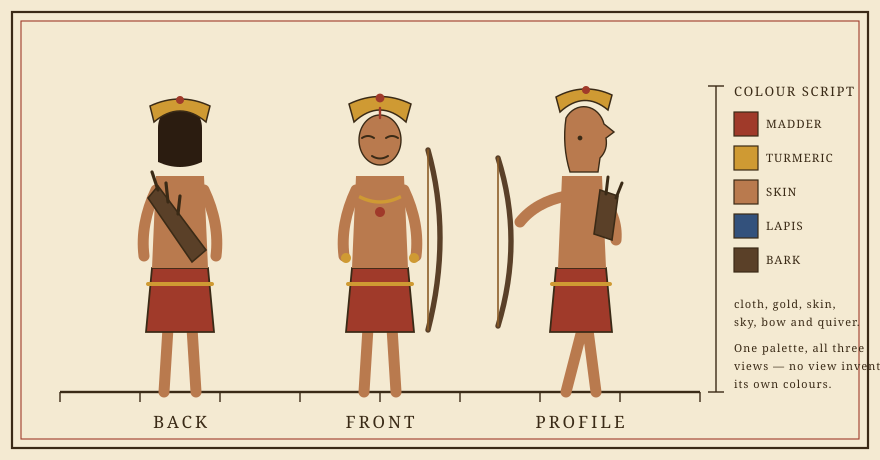

The Archer, Three Ways
Kurukshetra: Ashes of the Dice · Tenth Avatar Studios · Role: character artist · Status: shipped, 2025

The brief
Tenth Avatar Studios needed the protagonist of a war-epic RPG to read identically from every camera angle: one turnaround set — front, profile, back, expressions, colour script — that a modelling team in another city could build from without a single clarification call. Fourteen sets for the full cast followed if the first survived review.
The decisions
The source episode was fixed before any drawing: the archer in the exile’s last year, carrying the vow he has not yet had to keep. That one decision settled the design — no royal silk, a traveller’s dhoti with one gold border; the crown kept small, because the text gives him a kingdom’s burden, not yet its throne. The bow is drawn taller than the man, as the epic’s own descriptions insist, and the colour script is locked across all three views so no view can invent its own palette.
The review gates, as they happened
- Gate 1 — Thumbnails. Six silhouettes; the studio’s art director kept two. The other four are in my sketchbook, not this folio.
- Gate 2 — Cultural review. The consultant historian returned my first crown: it read as a film crown, not a period one. Redrawn from the brief’s own source notes and passed. I record this as the gate working, not failing.
- Gate 3 — Silhouette test. Shrunk to gameplay size, the profile view’s quiver merged with the bow. The quiver moved two finger-widths. It is always the small moves.
The outcome
Fourteen turnaround sets delivered over eleven weeks, inside the planner’s arithmetic on the opening leaf. The modelling team filed zero clarification calls on the Archer — the studio’s art director’s words about this set are printed on the folio’s first leaf, attached to this title, where testimony belongs.